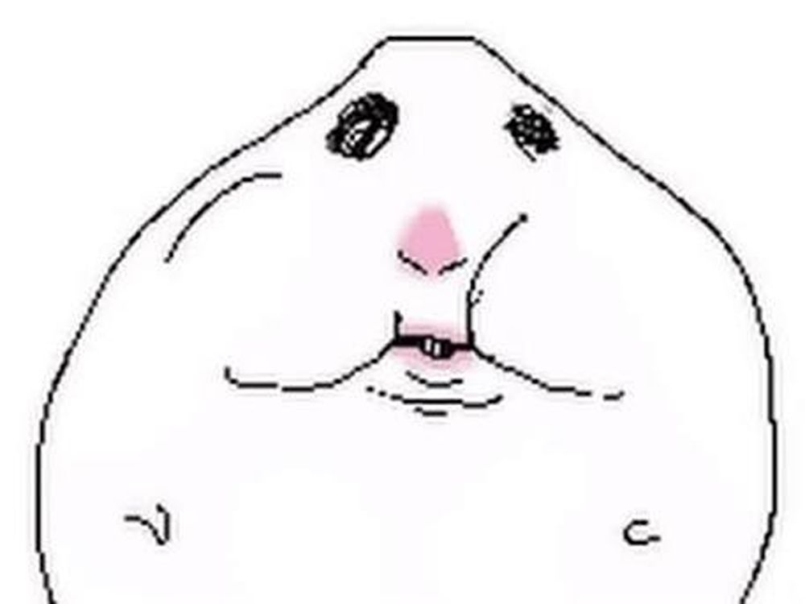

Ömer ve Bilge’nin Sonsuz Sayılı Günleri
Güzel sevgilim ile şimdiye kadar yaşadığımız güzel anılardan oluşan bir foto galeri ve daha nicesi.
.jpeg)
.jpeg)
.jpeg)
.jpeg)
.jpeg)
.jpeg)

Tam bir klasik tanıştığımız ilk gün taksim gezisi
Dünyanın en saçma gezisiydi ama tabii tanıştığımız ilk gün olduğu için yeri çok ayrı. Seni ilk defa o gün görmüştüm. Çok farklı bir tarzın var gibi gelmişti hatırlıyorum o yüzden sanırım biraz yakın hissettim. Bomboş Taksim gezisi, aşırı kalabalık bir ekip ve bacak ağrısı ama yine de çok güzel bir gündü. Bu fotoğrafı hiç sevmediğini biliyorum ama bence çok tatlı bir fotoğraf.
— Bana o powerbank'i veren Naz ablaya buradan teşekkür ediyorum, çok iyi şeylere vesile oldu.
.jpeg)

Ne yaptığımızı gram hatırlamadığım o gün
O gün Sena, Beyza, sen ve ben ne yaptık gram hatırlamıyorum ama bu fotoğrafı çektiğim için çok mutluyum, benim için yeri ayrıdır... O günü hatırlamıyorum, ne yaptık, ne ettik ama sanırım bu dörtlüden başkaları da vardı, karşımızda oturan Ada falan olması lazım, bilmiyorum. Benim için sadece o efektli fotoğraf önemli.
.jpeg)
.jpeg)
Halloween...
Halloween partisi cidden çok enteresan bir gün oldu. Hiç böyle ani olacağını beklemiyordum ama iyi ki de olmuş, bu konuda hiçbir pişmanlığım yok. Her şey çok hızlı ilerledi; ani alkol tüketimi ve o kalabalık danslar, her şey böyle birden gerçekleşti gibi geliyor şimdi düşününce. İyi ki o partiye beraber gitmişiz, iyi ki bütün bunlar yaşandı ve o günden beri beraberiz ama keşke o kadar terlemeseydim hiç güzel bir ilk izlenim değildi.
.jpeg)
Partiden sonra sizinkilerle tanıştığım gün ve yürüyüş
O gün ne yürüyüşü vardı hatırlamıyorum ama benim için önemli olan ilk defa arkadaşlarınla tanışacak olmamdı. Tam o sıralar ilişkimiz tam böyle rayına oturmaya başlıyor gibiydi. Umut ve Mehmet de çok kafa insanlardı. Biraz endişeliydim acaba nasıl tiplerdi diye ama gayet güzel geçti her şey.
.jpeg)
 (1).jpeg)
.jpeg)
Yine bi enteresan parti daha ama maskeli olanından
Bu güne ait çok güzel fotoğraflarımız olduğunu fark ettim, hepsi çok hoş ve maskelerimiz AŞIRI havalı. Çok eğlenceli bir gündü, kombinlerimiz mükemmeldi ve yine çok fıstık görünüyordun. Ufak bir kusma olayı yaşandı ama ondan da iyi dersler çıkarmış olduk sadece. O gün giydiğin kıyafetler hâlâ aklımda o kadar beğenmiştim ki. Konserin de böyle romantik bir havası vardı, ortam biraz karışıktı ama uzun sürmese de gayet eğlenceli bir gündü. Seni o kıyafetlerle görmek yetti bana. Bu kadar güzel fotoğraflar çeken Nehir'e teşekkürler.
.jpeg)
.jpeg)

Çiçekli bilge
Bu daha çiçeği fark etmediğin fotoğrafa baktıkça çok gülüyorum. Bilmiyorum artık o an aklından ne geçiyordu ama çok üzgün duruyorsun. Ondan sonra çiçeği sevmene çok sevinmiştim. Hayatımda ilk defa birine böyle çiçek alıp vermiştim çok heyecanlıydı. Ve aşağıya bahane uydurup da gidemiyordum zar zor kaçtım koşa koşa gittim. Şu an hatırlamıyorum hangi bahaneyle gitmiştim ama yine de işe yaradı...s
.jpeg)
.jpeg)
.jpeg)
.jpeg)
Sevgililer Günü
Sevgililer günümüz benim için çok önemli çünkü bana aldığın hediyelerin hepsi çok özenle alınmış şeylerdi yine her zamanki gibi. Ben de aşırı heyecanlıydım çünkü güzel bir yere gitmek için yer aramak ve randevu bulabilmek çok stresliydi, ama bence gittiğimiz yer gayet güzeldi ve pizzaları aşşşırı iyiydi. Özel bir gün bile olsa dana gibi yemek zorundayız...

.jpeg)
.jpeg)
Çok bir şey dememe gerek yok sanırım
Doyuyo! markasının Friends Combo menüsü (2 acılı tenders, 2 cajun tenders, 2 original tenders, 2 tavuk sandviç, patates kızartması, coleslaw, turşu, soslar ve 2 içecek) toplamda yaklaşık 2200 - 2500 kalori (kcal) civarındadır.

Bana aldığın harika destansı mükemmel hediye
Bu hediyeyi çok sevmemin nedeni hem gerçekten bayıldığım bir saat modeli olması hem de, ondan daha önemlisi, senin bu saati sevdiğimi sana öylesine söylediğim zaman bunu aklında tutup o kadar zaman bekleyip bana alman. Bu beni gerçekten çok mutlu etmişti ve aldığımda da aşırı şaşırmıştım. Sen bunu nereden aklında tuttun da buldun da aldın yani amk. Çok teşekkür ederim...
.jpeg)
.jpeg)
.jpeg)
Dünyanın en muhteşem günlerinden biri
Hayatımda yediğim en güzel sandviçin yapıldığı o gün her yanıyla çok güzeldi. Böyle bir fırsatımızın olması çok güzel oldu. O yediğimiz yemekler ve kahvaltı hâlâ aklımda. Her yanıyla mükemmel geçen iki gün. Öyle beraber 2 gün geçirince aklıma sadece böyle yaşayabilme ihtimalimiz geliyor ve bunu acilen istiyorum..
.jpeg)
.jpeg)
.jpeg)
.jpeg)
.jpeg)
.jpeg)
.jpeg)
Dünyanın en iyi doğum günü!!!
.jpeg)
Bu seneki doğum günüm gerçekten bu yaşıma kadar benim için yapılan en iyi doğum günüydü. Hiç böyle hediyeler almamıştım ya da benim için bu kadar şey yapılmamıştı. Ama sen çok öncesinden bunları planlayıp her şeyi düşünüp bana böyle bir doğum günü yaşatman gerçekten harikaydı. Her detayı çok güzel düşünülmüştü, aşırı keyif aldım. Bütün hediyeleri çok beğendim. Hepsi için belli ki ayrı ayrı çok fena bir emek harcanmış. Bu yüzden sana doğum gününde çok daha güzel şeyler yapmak istiyordum ama zamanı çok kötü denk geldi. O yüzden yanında olamayacağım doğum gününde. Bu beni çok üzüyor ama yine de bütün bunlar için çok teşekkür ederim.
.jpeg)
.jpeg)
.jpeg)
Adalar Gezimiz
Adalar gezimiz ve o muhteşem dondurmalarımız. Bu gezideki fotoğraflarımızı çok beğeniyorum. Çok eğlenceli bir geziydi sadece tepeye bisikletle çıkma işi yorucuydu ama yokuş aşağı bisiklet sürmek aşırı keyifliydi. O günden en favori anım çimenlikte o kütüğün üstünde oturmamızdı. Kesinlikle tekrarlanması gereken bir date...
.jpeg)
Mükemmel bir ikea date
Erzurum’a gelmeden bunu yapmak istiyordum. Gezerken böyle odaları, evleri gördükçe seninle eski püskü, dandik bir evi yeniden restore etmek istedim. O odalar gibi küçük de olsa bize ait olan bir evde kalıyor olmamız düşüncesi çok güzel geliyordu. Umarım en kısa sürede yaparız bunları. Bu yüzden IKEA date’imizi çok seviyorum ama keşke yemekleri de güzel olsa amına koyim.
 (1).jpeg)
.jpeg)
Cancanlar ile içmece günü
Ben hayatımda ilk defa bu kadar fazla bira içebildim. Normalde bir tane içip devamını asla getiremem ama o gün nedense içtikçe içmeye devam ettik dana gibi. Aşırı eğlenceli bir gündü. Tabii deli gibi öpüşmemiz de cabası. İstanbul’a geldiğimde bunu yine yapmamız lazım.

Dizlerin kırıldığı paten günleri
Ne kadar paten sürmede ustalaşmaya çok yaklaşmış olsak da başımıza gelen talihsiz olaylar nedeniyle yarıda bırakmak durumunda kaldık, ama yine de gittiğimiz günlerde çok eğlenmiştim. Paten sürmeyi gram beceremesem de ikimizin de götümüzün üstüne düşmesi çok komikti. Belki bu sene tekrar devam ederiz.

Beraber kaldığımız ilk gece ve Yılbaşı
Yılbaşı hakkında çok da bir şey dememe gerek yok. Benim için birçok ilkin yaşandığı bir geceydi ve beraber de tabii ki birçok ilki yaşadık. Yani bu anıları düşünüyorum, sanki yıllar önce yaşanmış şeyler gibi geliyor ama 8 ay önce olmuş. Çok garip hissettiriyor sanki yıllardır beraberiz gibi hissettiriyor. Bu gecenin tek kötü yanı alkoldü. O çok gereksiz kaçtı ama yine de günün geri kalan mükemmel anlarını hiç etkilemedi...
Dünyanın EN önemli 8 anı
Bizim için özel olan o anlar...
İlk Tanışma
1 Ekim - TaksimDünyanın en alakasız ekibi ile de olsa yine de ilk tanışma günümüz.
İlk Beraber Gezmeceler
16 Ekim - BeşiktaşOkula gitmeyip boş boş dolaştığımız ilk gün
İlk Party - Flört olma tarihi
28 Ekim - BeyoğluTARİHİN EN BÜYÜK ANI.
Sevgili Olarak Gidilen İlk Parti
26 Aralık - BakırköySevgili olarak gittiğimiz o ilk kusmalı parti.
İlk Beraber kaldığımız gün
1 Ocak - AvcılarTarihi bir dönüm noktası.
İlk Sevgililer Günümüz
14 Şubat - Taksim, KadıköyMükemmel pizzalı ve bol hediyeli....
Doğum Günüm
19 Nisan - KadıköyBirinin bana hazırladığı en iyi doğum günü.
Senin Doğum Günüm
18 Ağustos - ErzurumMaalesef bunda yokum :(
Küçük Bir Cryptogram Oyunu
Aşağ(ğ)ıdaki şifrelenmiş metni deşifre ederek kilidi açmalısın.
İpucu: İlk kelime olan "M P T P C P" aslında "KİLİDİ" demektir.
Çok Gizli Mesaj
Bu bölmeyi açmak için yukarıdaki şifreyi çözmelisin.
Yanlış şifre dana